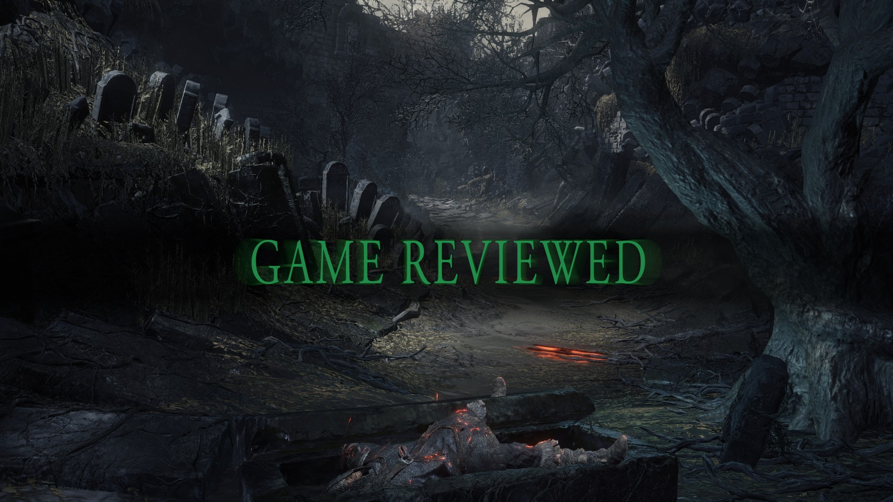

The Purpose
Gamer Volition Chronicles is a review blog run by one person. Games are reviewed based off of release dates, my own time, and play prioritization.
Somewhat biased reviews by somebody with a variety of interests in the gaming market.

What Do YOU, The Reader Gain From This?
My plans and opinions are solely led by me. There is zero affiliation with any outsider company or outside bias that does not belong to me. So everything you see and read is all sourced from me. That being said, I would not receive an early review copy. Games that end up being reviewed are either totally new or dated, there is no limit to what could be reviewed.
Recent Game Reviews
| Game Title | Game Release Date | Rating | Genre |
|---|---|---|---|
| Final Fantasy 7 (1997) | January 31, 1997 | Play It | JRPG |
| Fire Emblem Engage | January 20, 2023 | Consider Playing | Tactical JRPG |
| Disco Elysium | October 15, 2019 | Worship It | Role-Playing Game |